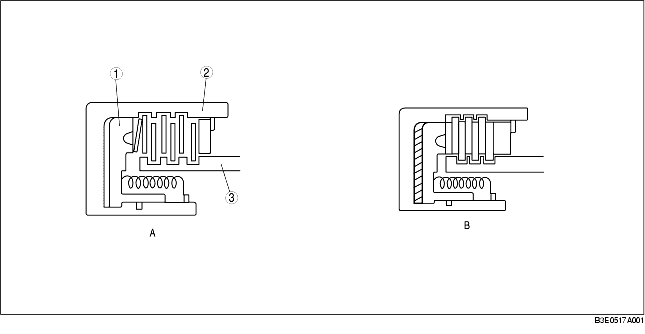
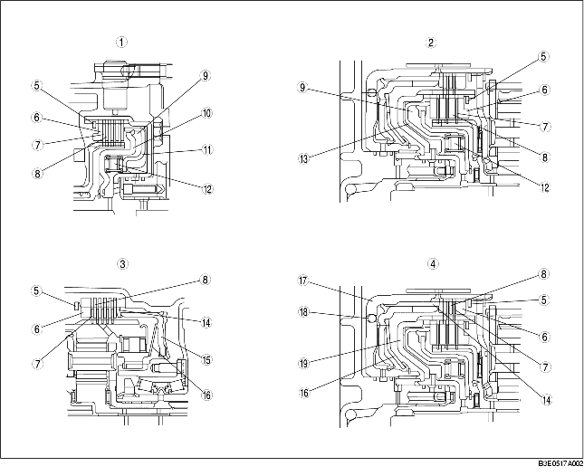

• En principbild på uppbyggnaden visas i bilden nedan. I figur A, befinner sig vätskan i kopplingslamellerna (medbringarskivor, lamellskivor) och kraften överförs inte eftersom vätska gör att lamellerna slirar. Figur B visar kopplingen när hydraultrycket påverkar kolven; medbringarskivorna och lamellskivorna pressas samman för att överföra kraften från kopplingstrumman till navet. När hydraultrycket i kolven sjunker kommer kopplingarna att separera på grund av fjädrarna så att tillståndet som visas i figur A återfås.

.
• De tallriksformade skivorna som används för backkoppling samt låg- och backbroms minskar den stötverkan som kan uppstå vid plötslig inkoppling. Backventilen i som är inbyggd i 2-4 bromstrumma (backkoppling) dränerar vätska enbart vid frirullning för att förhindra att hydraultrycket ökar så att kopplingen aktiveras till hälften på grund av vätskerester. I framkoppling och 3-4 koppling är centrifugalbalanskammaren monterad på motstående sida om den allmänna kopplingskammaren. Centrifugalbalanskammaren är hela tiden fylld med växellådsolja från den exklusiva smörjpassagen i turbinaxeln.

.